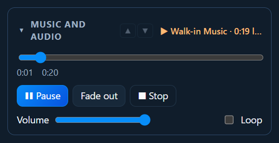

Media and slides
Music and audio
PraiseAV can play music through the computer’s sound output, usually a cable to the sound desk.

Walk-in music
- Put your music in the Media tab, in Music and Audio (click + Add videos, pictures or music).
- Click Music and Audio, then ▶ Play all. The tracks play one after another.
Or click one track and ▶ Play now.
Controlling it
Open Music and audio in the right-hand column:
- ▶ Play / ❚❚ Pause.
- Fade out: turns it down gently over 3 seconds, then stops. Use it when the service starts.
- ■ Stop: stops at once.
- Skip ▶▶: next track.
- Drag the bar to jump to a point in the track.
- Volume, and Loop to go round again when it ends.
The top line always says what’s playing and how long is left.
Music in the service
Drag a music file from the Media tab into the service, for example a track for the offering. It shows with a Music label. Click it and press the big ▶ Play button. The screens don’t change, so you can play music under a slide.
Backing tracks and videos
If the band is away, a song can have a backing track (an MP3, say) or a video (a worship video of a band playing) that plays when the song goes on screen.
- Add the music or video in the Media tab.
- In the Songs tab, choose the song and click Edit song.
- Under Backing track or video, choose the file. Save.
When the song goes on screen, the track or video starts from the beginning. A video plays behind the words, with its sound, so everyone can sing along, like a karaoke video. When you move on to the next item, it stops.
For a video there’s a quicker way: in the Media tab, click the video, then Sing along with a song… and choose the song. See Media.
A week when the band plays it live? Above the song’s slides, untick Play the backing track (or Play the backing video). The song is then just the words, moved with Next as usual. It only changes that service.
The words can also move on by themselves in time with the track or video: see Timed words.
The sound
Music plays through Windows’ default sound output. To choose which (say, the headphone socket to the sound desk, or the HDMI to the projector), click the speaker icon by the clock at the bottom right of Windows.
Videos’ sound comes from the congregation screen’s window, through the same output.